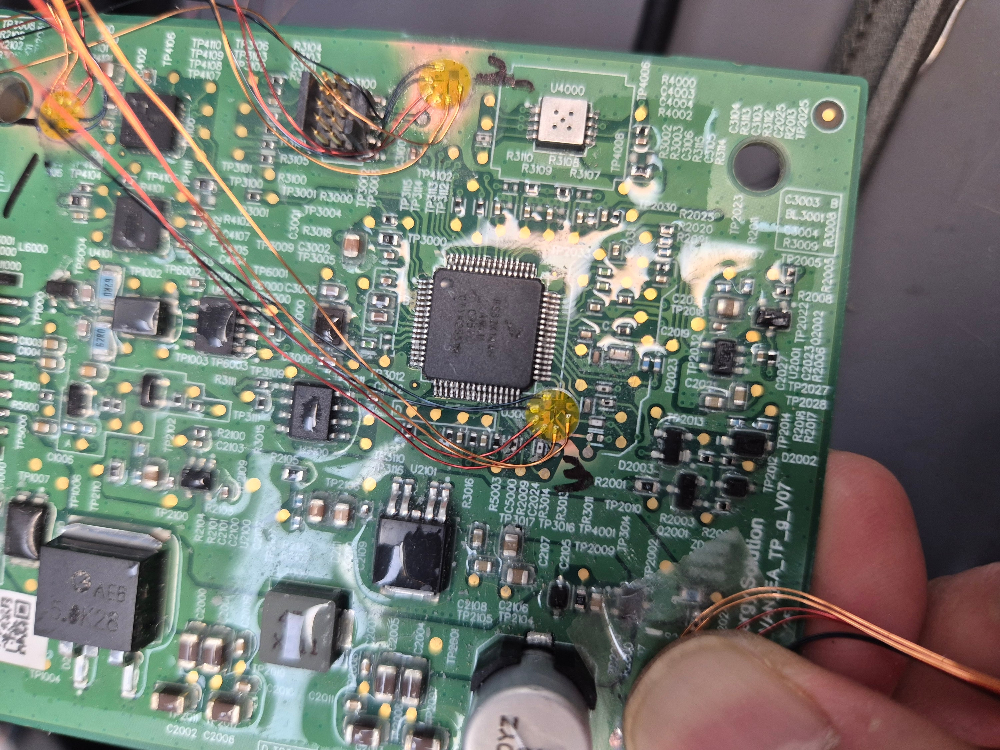
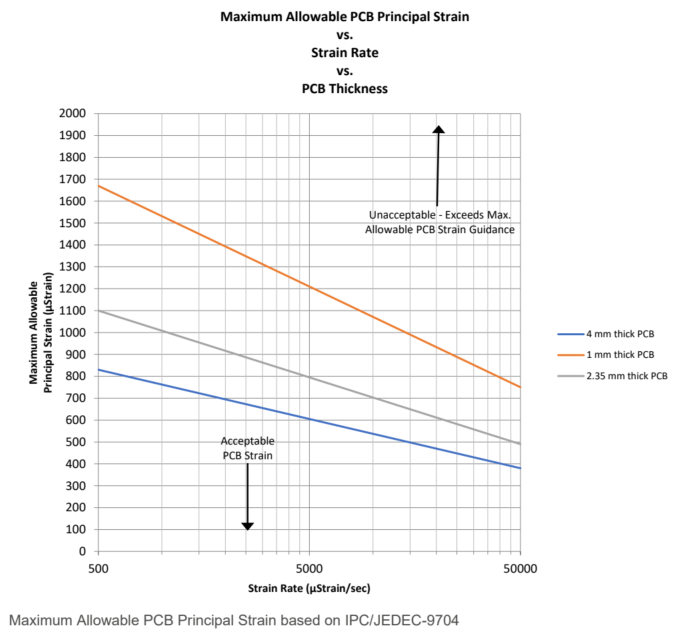
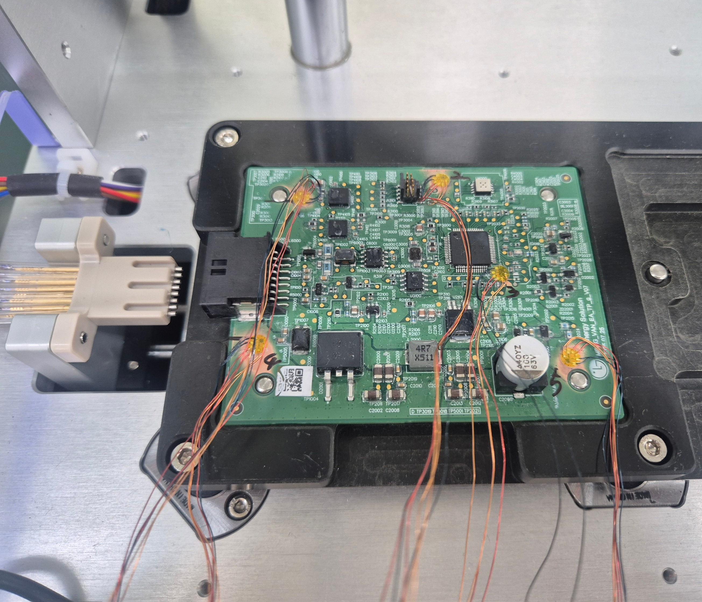
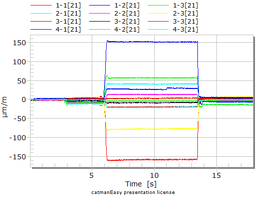
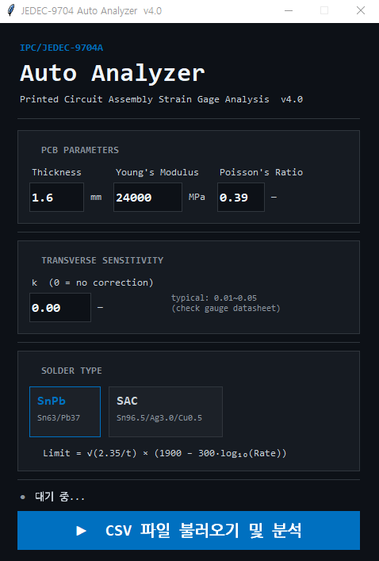

PCB 스트레인 측정이 왜 필요한가?
스마트폰·전기차 전장·반도체 패키징의 고집적화로 PCB 기판에 작용하는 기계적 응력(Mechanical Stress) 관리가 품질의 핵심으로 떠오르고 있습니다. 제조 공정 중 발생하는 미세한 굽힘(Bending)이 BGA 솔더 조인트 파손과 MLCC 크랙의 주된 원인입니다.
특히 무연(Lead-free) 납 사용 증가로 솔더 조인트의 기계적 취약성이 커졌습니다. 육안으로는 발견 불가능한 잠재 불량이 현장에서 발현되기 전에, 공정별 스트레인 정량 측정과 IPC 한계 기준 대비 관리가 필수입니다.
| 공정 |
응력 발생 원인 |
측정 목적 |
| Mount 공정 |
부품 실장 전 지그 고정, 기판 자중 |
기본 변형 거동 확인, 기준값 설정 |
| Router 공정 |
Panel 분리·절단 시 굽힘 응력 |
분리 공정의 피크 응력 포착, 라우터 경로 최적화 |
| FCT / 기능검사 |
프로브·지그 접촉 압력 |
검사 지그 하중 허용 범위 확인 |
| 하우징 조립 |
커넥터 강제 체결, 스크류 체결 |
조립 공정 항복점(Yield Point) 분석 |
| ICT 테스트 |
핀 접촉 충격, 지그 가압 |
BGA 주변 스트레인이 한계 곡선 이내인지 판정 |
IPC/JEDEC-9704A 규격 핵심 요구사항
IPC/JEDEC-9704A (Printed Wiring Board Strain Gage Test Guideline)는 PCB 기판 스트레인 게이지 시험 방법을 규정하는 국제 표준입니다. 전 세계 주요 전자 제품 제조사들이 공급망 신뢰성 요구 규격으로 지정하고 있습니다.
IPC/JEDEC-9704A 주요 요구사항
- 측정 센서: 3축 로젯(Rosette) 스트레인게이지를 BGA 부품 주변에 부착
- 게이지 위치: BGA 패드 중심으로부터 규정 거리 이내
- 샘플링 레이트: 최소 1,000 Hz (1 kHz) 이상
- 데이터 해상도: 12 bit 이상
- 판정 기준: 측정된 주응력(Principal Strain)을 PCB 두께별 한계 변형률 곡선(Limit Strain Curve)과 비교
- 리포트: 피크 스트레인 값, 변형률 속도(Strain Rate), Pass/Fail 판정 결과 포함

PCB에 부착된 HBK RF91 3축 로젯 스트레인게이지 — BGA 주변 협소 공간 다채널 부착

IPC/JEDEC-9704 Limit Strain Curve — PCB 두께별(1mm·2.35mm·4mm) 최대 허용 주응력 vs 변형률 속도. 측정값이 곡선 아래 영역(Acceptable)이면 Pass
스트레인게이지 선정 및 부착
PCB 응력 측정에는 초소형 면적, BGA 주변 협소 공간 적용, 1미터 연장선 일체형이라는 특수 요구조건이 있습니다. IPC/JEDEC-9704A에 부합하는 표준 게이지로는 HBK(구 HBM) RF91 시리즈가 광범위하게 사용됩니다.
HBK RF91 — PCB 응력 측정 전용 스트레인게이지
타입
3축 로젯 (0°/45°/90°)
직경
약 5 mm (초소형)
저항값
120 Ω
리드선
1 m 에나멜선 일체형
규격 적합성
IPC/JEDEC-9704A 적합

HBK RF91 — PCB 응력 측정 전용 3축 로젯 게이지

RF91 — 1m 에나멜선 일체형, BGA 협소 공간 대응
씨앤디테크는 고객사 PCB를 수령하여 사무실에서 게이지를 부착한 후 납품하거나, 전문 엔지니어가 현장에 직접 방문하여 부착 작업을 수행합니다. Panel 상태 및 개별 PCB 모두 대응 가능합니다.

PCB 스트레인게이지 부착 작업

BGA 주변 3축 로젯 게이지 부착 완료
IPC/JEDEC-9704A 측정 절차
STEP 01
측정 위치 선정
BGA 부품 위치 파악, IPC 규격에 따른 게이지 부착 좌표 결정
STEP 02
게이지 부착
표면 세척 → RF91 3축 로젯 부착 → 에나멜선 고정 → 결선
STEP 03
DAQ 연결·측정
1kHz+ 샘플링으로 각 공정 실행 — 피크 스트레인 데이터 취득
STEP 04
분석·리포트
주응력 연산 → IPC 한계 곡선 대비 Pass/Fail 판정 → 공식 리포트 출력

DAQ 연결 후 공정 중 스트레인 측정

Panel 상태 PCB 스트레인게이지 부착

PCB 측정 지그에 장착 후 DAQ 다채널 연결 — 공정 중 스트레인 동시 취득

공정별 PCB 스트레인(변형률) 측정 그래프 — 피크 응력 포착
DAQ 데이터 수집 시스템
PCB 공정 중 발생하는 찰나의 피크 응력(Peak Stress)을 놓치지 않으려면 노이즈 없는 고속 DAQ가 필수입니다. 씨앤디테크는 현장 환경과 채널 수요에 맞춰 최적 솔루션을 제안합니다.
HBM QuantumX MX1615
16채널 고정밀 앰프 모듈
채널 수16채널 (확장 가능)
입력 형식1/4, 1/2, Full Bridge
샘플링고속 (IPC 규격 상회)
특징저잡음·강력한 안티앨리어싱
적합 환경R&D Lab, 정밀 신뢰성 평가
GTDL SYSTEM
모듈형 통합 DAQ
채널 수모듈 조합으로 자유 확장
입력 형식스트레인·전압·온도·진동
샘플링고속 (IPC 규격 적합)
특징복합 다채널 동시 계측
적합 환경양산 라인 평가, 경제적 대안
두 시스템 모두 IPC/JEDEC-9704A 요구 사양(1kHz+, 12bit+)을 충족합니다. 채널 수, 예산, 현장 환경에 따라 최적 구성을 제안해 드립니다.
PCB 스트레인 분석 소프트웨어
씨앤디테크는 DAQ에서 취득한 원시 데이터를 IPC/JEDEC-9704A 기준에 따라 자동 분석하는 전용 소프트웨어를 공급합니다.
⚡
초고속 자동 연산
DAQ 출력 파일 로드 즉시 — 최대/최소 주응력(Principal Strain), 변형률 속도(Strain Rate) 자동 계산
📊
직관적 Pass/Fail 판정
PCB 두께별 IPC 한계 변형률 곡선(Limit Strain Curve)과 측정값을 그래프에서 직접 비교. 합불 판정을 한눈에 확인
📄
규격 리포트 자동 생성
고객사·원청 제출용 공식 분석 리포트 즉각 출력. 품질 보증 리드타임 단축

IPC/JEDEC-9704A 분석 결과 — SG1·SG2·SG3 주응력 vs 한계 변형률 곡선 Pass/Fail 판정

JEDEC-9704 Auto Analyzer v4.0 — PCB 파라미터(두께·탄성계수)·솔더 타입 설정 후 CSV 자동 분석
실제 측정 사례 — 배터리 모듈 FPCB
배터리 모듈에 적용된 FPCB(연성회로기판) 조립 공정에서 스트레인게이지로 조립 응력을 측정한 사례입니다. 좁은 틈새로 기판을 끼워넣거나 후크에 강제 체결하는 과정에서 발생하는 기계적 응력을 정량화하고, 구조적 항복점(Structural Yield Point)을 도출해 지그 설계 개선 가이드를 제공했습니다.

배터리 셀 케리어 FPCB 조립 응력 측정

FPCB 변형률(με) 측정 결과

조립 응력 — 구조적 항복점(Yield Point) 분석
씨앤디테크 토탈 솔루션
씨앤디테크는 장비 납품에 그치지 않고 실무자가 시스템을 100% 활용할 수 있도록 엔지니어링 교육과 기술 지원을 동반합니다.
📦 측정 용역 서비스
스트레인게이지 부착 → 현장 측정 → IPC/JEDEC-9704A 기준 분석 리포트까지 일괄 수행. R&D 및 양산 라인 불량 원인 분석.
🔧 시스템 공급 및 교육
스트레인게이지·DAQ·소프트웨어 통합 시스템 공급. 현장 방문 엔지니어링 교육: 게이지 선정·부착·결선·운용·IPC 분석 전 과정.
📐 게이지 부착 대행
PCB를 수령하여 전문 부착 후 납품. IPC 규격 위치에 정확한 부착 보장.
🗂️ 부자재 일체 공급
HBK RF91 게이지, 전용 접착제, 특수 코팅제 등 신뢰성 측정에 필요한 부자재 전품목 공급.
주요 적용 분야
스마트폰 제조 공정
전기차 전장 부품
배터리 모듈 조립
반도체 패키지
SMT 라우팅 공정
ICT 테스트 지그
FPCB 조립
BGA 신뢰성 평가
서버·산업용 보드
관련 기술 자료:
자주 묻는 질문 (FAQ)
IPC/JEDEC-9704A란 무엇인가요?
PCB 기판에 스트레인게이지를 부착해 제조 공정 중 발생하는 기계적 응력(변형률)을 측정하는 국제 표준입니다. 3축 로젯 게이지를 BGA 주변에 부착하고 최소 1kHz 샘플링·12bit 이상 해상도의 DAQ로 측정하도록 규정하며, IPC 한계 곡선 대비 Pass/Fail로 판정합니다.
PCB 스트레인 측정이 왜 필요한가요?
SMT 라우팅·하우징 조립·ICT 테스트 등 공정에서 발생하는 PCB 굽힘 응력이 과도하면 BGA 솔더 조인트 파손, MLCC 크랙 등 잠재 불량이 생깁니다. 무연(Lead-free) 납 도입 이후 이 문제가 더욱 심각해져, IPC/JEDEC-9704A 기반 정량 관리가 글로벌 제조사 필수 요구 사항이 됐습니다.
PCB 전용 스트레인게이지는 무엇을 사용하나요?
HBK(구 HBM) RF91 시리즈가 IPC/JEDEC-9704A에 부합하는 PCB 전용 게이지로 가장 널리 사용됩니다. 직경 약 5mm의 초소형 3축 로젯, 120Ω, 1m 에나멜선 일체형으로 BGA 주변의 협소한 공간에도 정확하게 부착할 수 있습니다.
DAQ 최소 사양이 어떻게 되나요?
IPC/JEDEC-9704A는 최소 1kHz 샘플링 레이트, 12bit 이상 해상도를 요구합니다. 씨앤디테크는 HBM QuantumX MX1615(16채널 고정밀, R&D용)와 GTDL 모듈형 DAQ(양산 라인 경제적 대안)를 공급합니다.
현장 출장 측정 서비스도 가능한가요?
가능합니다. 씨앤디테크 엔지니어가 고객사 현장에 직접 방문하여 스트레인게이지 부착부터 측정, IPC/JEDEC-9704A 기준 분석 리포트 제공까지 전 과정을 수행합니다. PCB를 수령하여 사무소에서 부착 후 납품하는 방식도 가능합니다.